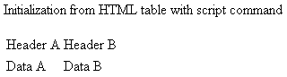
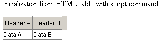

Initialization from HTML
dhtlmxGrid can be initialized from an HTML markup. This allows converting existing tables to active grids, or the user can generate data as an HTML table and convert it into the grid, instead of working with a raw XML.
There are two ways to initialize the grid from the HTML:
- Table-Based Initialization;
- Automatic Initialization by a CSS Class.
In both cases, the user needs to add dhtmlxgrid_start.js file to the page.
Note: only one of the above mentioned methods should be used at a time (not both at the same time).
Table-Based Initialization
A table can be converted to the grid by dhtmlXGridFromTable command:
<table id="some_table"> <tr> <td>Header A</td><td>Header B</td> </tr> <tr> <td>Data A</td><td>Data B</td> </tr> ... </table> <script> var grid = dhtmlXGridFromTable("some_table"); </script>
Before the initialization:

After the initialization:

Automatic Initialization by a CSS Class
The initialization by a CSS class will work only for those tables that were on page at the moment of loading. If the page was created dynamically or loaded by some kind of AJAX, only the direct initialization method can be used.
<table id="some_table" class="dhtmlxGrid"> <tr> <td>Header A</td><td>Header B</td> </tr> <tr> <td>Data A</td><td>Data B</td> </tr> ... </table>
Grid Configuration during Loading from HTML
The first row of the table will be used for grid headers. The user can apply some attributes to define properties of grid's columns (all of them are optional).
<table class="dhtmlxGrid"> <tr> <td width="150" align="left">Column 1</td> <td type="co" sort="str">Column 2</td> <td type="edn" format="0,000.00">Column 3</td> <td>Column 4</td> </tr>
The user can indicate:
- width - width of a column in pixels; by default the width of a column in the source table will be taken;
- align - align of data in a column;
- sort - type of sorting used against a column;
- type - cell type (“ro” by default);
- format - data format (can be used against edn|ron|dhxCalendar|dhxCalendarA column types - mimics setNumberFormat|setDateFormat functionality).
Global Grid Settings
Some grid modes can be enabled directly from source table attributes:
//enable drag-and-drop in the grid <table class="dhtmlxGrid" dragAndDrop="true" //set path to the image folder of the grid <table class="dhtmlxGrid" imgpath="../some/.." //enable multi-line mode in the grid <table class="dhtmlxGrid" multiline="true" //enable light mouse navigation mode <table class="dhtmlxGrid" lightnavigation="true" //enables the alter CSS mode (it is equal to grid.enableAlterCss("someA","someB")) <table class="dhtmlxGrid" unevenrow="someA" evenrow="someB" //enables the split mode <table class="dhtmlxGrid" split="2"
Setting Grid Size
By default, the grid will take the same size as the table from which it was created. But the user can specify its size directly through source table attributes:
<table class="dhtmlxGrid" gridWidth="600" gridHeight="400"
If the user wants to set grid's size to auto, he can use the default approach:
<script> var grid=dhtmlXGridFromTable("some_table"); grid.enableAutoWidth(true); grid.enableAutoHeight(true); grid.setSizes(); </script>
The following methods were used in the code snippet above:
- enableAutoWidth(mode, max_limit, min_limit) - changes grid's container size on the fly to fit total width of grid columns. The parameters are as follows:
- mode(true|false) - enable|disable autowidth;
- max_limit - maximal allowed width, not limited by default;
- min_limit - minimal allowed width, not limited by default.
- enableAutoHeight(mode, maxHeight, countFullHeight) - enables autoheight of the grid with the following parameters:
- mode(true|false) - enable|disable autoheight;
- maxHeight - maximum height before scrolling appears, not limited by default;
- countFullHeight(true|false) - controls the usage of maxHeight parameter, when it is set to true, the whole grid height is included in max height calculation, false means that only data part (without the header) of the grid is included in calculation; set to false be default.
- setSizes() - this method can be called to refresh grid sizes in case when the grid was customized with some user code.
Reference to Grid Object and Initialization Events
When the grid is created by dhtmlXGridFromTable command, the reference to the grid object is returned from the method.
In case of initialization by a CSS class, the user can define the name of the global variable that will be used as a reference:
<table class="dhtmlxGrid" name="grid">
It allows to call any API method of such grid by:
grid.some(...
It should be noted that the object becomes available only after initialization (which occurs with onLoad event).
It is possible to attach some custom code to the moment when grid's configuration is being initialized and to the moment when the grid has already been initialized:
<table name="grid" class="dhtmlxGrid" onbeforeinit="myfunc1()" oninit="myfunc2()" ... <script> function myfunc1(){ grid.enableMultiselect(true); } function myfunc2(){ grid.selectRow(0); } </script>
The code of onbeforeinit attribute is executed before grid's structure and data are initialized from the HTML, so the user can place any global setting here. The code of oninit attribute is executed when grid's configuration and data are loaded, so it is the best place for some after-initialization calls - row selecting, data operation, etc.